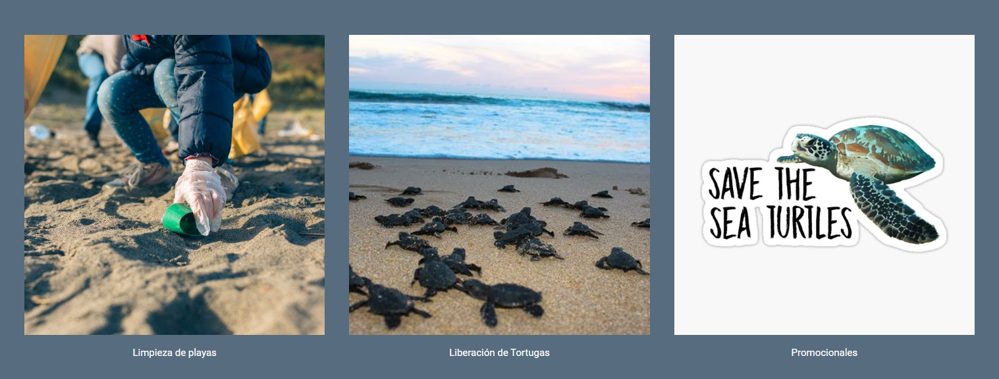

Turstic
Sofia Lara
Objetivos generales |
Liberacion de tortugas |
Limpieza de playas|
Promocionales|
Autor
OBJETIVOS:
- El objetivo de este programa es reducir la cantidad de desechos en el mar provenientes de fuentes terrestres o marítimas que contaminan las vías fluviales y los océanos.
-Mejorar el estado de conservación de las tortugas marinas en El Salvador, promover su protección, conservación y recuperación y la de su hábitat, a través de la educación ambiental.
- Accionar de manera participativa para limpiar las playas, concientizar respecto a esta problemática y generar un cambio de hábito en los consumidores.
-Involucrar a las comunidades en la conservación de la especie y en las oportunidades de turismo derivadas de las acciones de conservación.
-Reducir la contaminación marina para que nosotros y sus habitantes tangamos un mejor hogar.
-Playas mas limpias en El Slavador.
